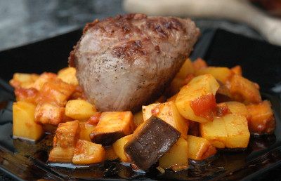

| Zutaten für 4 Portionen: | |
| 480 g = 4 Stück | Lammhuft |
| 500 g = 2 Stück | Auberginen |
| Meersalz | |
| 800 g | festkochende Kartoffeln |
| 1 El | Zwiebeln |
| 2 Zehen | Knoblauch |
| 2 El | Olivenöl |
| 1 Kl | Kreuzkümmelpulver |
| 1 Kl | Paprikapulver |
| 0.5 Kl | Kurkumapulver |
| 2.5 dl | Gemüsebouillon |
| 300 g | Tomaten |
| 1 Prise | Pfeffer |
| 2 El | Zitronensaft |
Die Lammhufte mit Salz und Pfeffer bestreuen und nach Belieben mit Rosmarin, Thymian und Olivenöl marinieren
Auberginen in 1 cm Würfel schneiden. In ein Sieb geben, mit viel Salz bestreuen und 30 Minuten Wasser ziehen lassen.
Die Gratinform ausfetten und mit den in Würfel geschnittenen geschälten Kartoffeln, dem gehackten Zwiebelstück, den gepressten Knoblauchzehen und den gewürfelten Tomaten füllen.
Die Auberginen gut abbrausen und abtropfen und ebenfalls zugeben.
Die Gewürze (Kreuzkümmelpulver, Paprikapulver, Kurkumapulver, Pfeffer) ebenfalls zugeben, wie auch den Zitronensaft.
Die Gemüsemischung gut durchmischen und mit Gemüsebouillon übergiessen. Olivenöl darüber geben.
Den Ofen auf 200°C vorheizen und das Gemüse 50 Minuten backen.
ca. 15 Minuten vor dem Backende in der Grillpfanne die Lammhufte schön braten.
eBalance
Pro Portion zu 617g = 457 kcal. 27% Protein, 41% Kohlenhydrate, 32% Fett
Hat im Februar 2013 ganz gut geschmeckt. Das Gemüse war etwas al-dente. Deshalb habe ich die Backofen-Zeit von 40 auf 50 Minuten erhöht.
@LINKBACK_TAG@ @WAKELOCK@